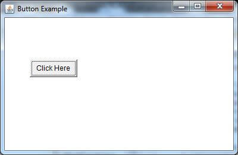
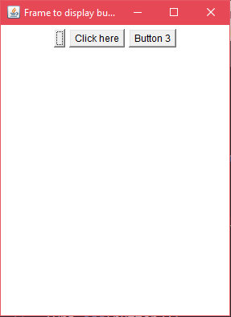
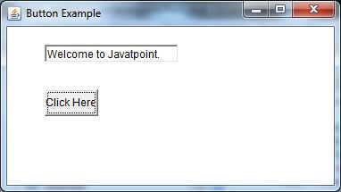

Java AWT Button
17 Mar 2025 | 4 min read
A button is basically a control component with a label that generates an event when pushed. The Button class is used to create a labeled button that has platform independent implementation. The application result in some action when the button is pushed.
When we press a button and release it, AWT sends an instance of ActionEvent to that button by calling processEvent on the button. The processEvent method of the button receives the all the events, then it passes an action event by calling its own method processActionEvent. This method passes the action event on to action listeners that are interested in the action events generated by the button.
To perform an action on a button being pressed and released, the ActionListener interface needs to be implemented. The registered new listener can receive events from the button by calling addActionListener method of the button. The Java application can use the button's action command as a messaging protocol.
AWT Button Class Declaration
public class Button extends Component implements Accessible
Button Class Constructors
Following table shows the types of Button class constructors
| Sr. no. | Constructor | Description |
|---|---|---|
| 1. | Button() | It constructs a new button with an empty string i.e. it has no label. |
| 2. | Button(String text) | It constructs a new button with given string as its label. |
Button Class Methods
| Sr. no. | Method | Description |
|---|---|---|
| 1. | void setText(String text) | It sets the string message on the button |
| 2. | String getText() | It fetches the String message on the button. |
| 3. | void setLabel(String label) | It sets the label of button with the specified string. |
| 4. | String getLabel() | It fetches the label of the button. |
| 5. | void addNotify() | It creates the peer of the button. |
| 6. | AccessibleContext getAccessibleContext() | It fetched the accessible context associated with the button. |
| 7. | void addActionListener(ActionListener l) | It adds the specified action listener to get the action events from the button. |
| 8. | String getActionCommand() | It returns the command name of the action event fired by the button. |
| 9. | ActionListener[] getActionListeners() | It returns an array of all the action listeners registered on the button. |
Examples
Compile the following code with the command:
C:\Users\Anurati\Desktop\abcDemo>javac ButtonExample.java
If there's no error, we can execute the code using:
C:\Users\Anurati\Desktop\abcDemo>java ButtonExample
Output:
Example 2:
import javax.swing.*;
import java.awt.*;
import java.awt.event.*;
public class ButtonExample2 {
Frame fObj;
Button button1, button2, button3;
ButtonExample2() {
fObj = new Frame("Frame to display buttons");
button1 = new Button();
button2 = new Button("Click here");
button3 = new Button();
button3.setLabel("Button 3");
fObj.add(button1);
fObj.add(button2);
fObj.add(button3);
fObj.setLayout(new FlowLayout());
fObj.setSize(300,400);
fObj.setVisible(true);
}
public static void main(String args[]) {
new ButtonExample2();
}
}
Output:
Java AWT Button Example with ActionListener
Example:
In the following example, we are handling the button click events by implementing ActionListener Interface.
ButtonExample3.java
import java.awt.*;
import java.awt.event.*;
public class ButtonExample3 {
public static void main(String[] args) {
Frame f = new Frame("Button Example");
final TextField tf=new TextField();
tf.setBounds(50,50, 150,20);
Button b=new Button("Click Here");
b.setBounds(50,100,60,30);
b.addActionListener(new ActionListener() {
public void actionPerformed(ActionEvent e) {
tf.setText("Welcome to Javatpoint.");
}
});
f.add(b);
f.add(tf);
f.setSize(400,400);
f.setLayout(null);
f.setVisible(true);
}
}
Output:
